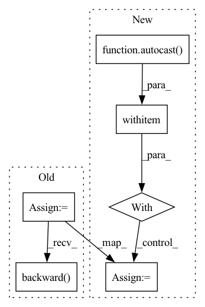

Pattern ID :9255
Before Change
// Forward + backward
self.optimizer.zero_grad()
out = self.model(data)
loss = self.loss_fn(out, target)
loss.backward()
if self.grad_clip_max_norm is not None:
torch.nn.utils.clip_grad_norm_(
self.model.parameters(), self.grad_clip_max_normAfter Change
// Forward + backward
self.optimizer.zero_grad()
with autocast ():
out = self.model(data)
loss = self.loss_fn(out, target)
// Backward passIn pattern: SUPERPATTERN
Frequency: 5
Non-data size: 6
Instances Fragment ID: 33323004
Project Name: dmizr/phuber
Commit Name: b34db00b4f34f52e71ca12c481b2b91998eac93e
Time: 2020-12-06
Author: david.mizrahi@epfl.ch
File Name: phuber/trainer.py
M Class Name: Trainer
N Class Name: Trainer
M Method Name: _train_loop(2)
N Method Name: _train_loop(2)
M Parent Class:
N Parent Class:
M File Name: phuber/trainer.py
N File Name: phuber/trainer.py
M Start Line: 119
M End Line: 128
N Start Line: 123
N End Line: 140
Before Change
// Make prediction
losses, _ = self._model.train_step(data, targets, evaluation=False)
loss_abs = sum(losses.values())
self._optimizer.zero_grad()
loss_abs.backward()
// Clip grads to counter exploding grads
max_norm = self._config["clip_max_norm"]
if max_norm > 0:After Change
targets["target_seg"] = seg_mask.squeeze().to(device=self._device)
// Make prediction
with autocast ():
losses, _ = self._model.train_step(data, targets, evaluation=False)
loss_abs = sum(losses.values())
self._optimizer.zero_grad()
self._scaler.scale(loss_abs).backward() Fragment ID: 33323000
Project Name: bwittmann/transoar
Commit Name: 67ff1090209f6d8c530711c83549b5eb060e64d6
Time: 2022-01-23
Author: bastian.wittmann@tum.de
File Name: transoar/trainer.py
M Class Name: Trainer
N Class Name: Trainer
M Method Name: _train_one_epoch(2)
N Method Name: _train_one_epoch(2)
M Parent Class:
N Parent Class:
M File Name: transoar/trainer.py
N File Name: transoar/trainer.py
M Start Line: 47
M End Line: 70
N Start Line: 50
N End Line: 82
Before Change
content_loss = torch.mean(torch.sum(torch.square(diff1_mse), dim=[3]))
update_list += [content_loss]
update_list_name += ["l2_content_loss"]
gen_loss = content_loss
fnet_loss = content_loss
diff2_mse = input_frames - s_input_warp
warp_loss = torch.mean(torch.sum(torch.square(diff2_mse), dim=[3]))
update_list += [warp_loss]
update_list_name += ["l2_warp_loss"]
vgg_loss = None
vgg_loss_list = []
if args.vgg_scaling > 0.0:
vgg_wei_list = [1.0, 1.0, 1.0, 1.0]
vgg_loss = 0
vgg_layer_n = len(vgg_layer_labels)
for layer_i in range(vgg_layer_n):
curvgg_diff = torch.sum(gen_vgg[vgg_layer_labels[layer_i]] * target_vgg[vgg_layer_labels[layer_i]], dim=[3])
scaled_layer_loss = vgg_wei_list[layer_i] * curvgg_diff
vgg_loss_list += [curvgg_diff]
vgg_loss += scaled_layer_loss
gen_loss += args.vgg_scaling * vgg_loss
fnet_loss += args.vgg_scaling * vgg_loss.detach()
vgg_loss_list += [vgg_loss]
update_list += vgg_loss_list
update_list_name += ["vgg_loss_%d" % (_ + 2) for _ in range(len(vgg_loss_list) - 1)]
update_list_name += ["vgg_all"]
if args.pingpang:
gen_out_first = gen_outputs[:, 0:args.RNN_N - 1, :, :, :]
gen_out_last_rev = torch.flip(gen_outputs, dims=[1])[:, :args.RNN_N - 1:1, :, :, :]
pploss = torch.mean(torch.abs(gen_out_first - gen_out_last_rev))
if args.pp_scaling > 0:
gen_loss += pploss.cpu() * args.pp_scaling
fnet_loss += pploss.cpu() * args.pp_scaling
update_list += [pploss]
update_list_name += ["PingPang"]
if (GAN_FLAG):
t_adversarial_loss = torch.mean(-torch.log(tdiscrim_fake_output.detach() + args.EPS))
d_adversarial_loss = torch.mean(-torch.log(tdiscrim_fake_output + args.EPS))
dt_ratio = torch.min(torch.tensor(args.Dt_ratio_max),
args.Dt_ratio_0 + args.Dt_ratio_add * torch.tensor(Global_step, dtype=torch.float32))
gen_loss += args.ratio * t_adversarial_loss.cpu()
fnet_loss += args.ratio * t_adversarial_loss.cpu()
update_list += [t_adversarial_loss]
update_list_name += ["t_adversarial_loss"]
// Computing gradients for Generator and updating weights
if (args.D_LAYERLOSS):
gen_loss += sum_layer_loss.cpu() * dt_ratio
gen_loss = gen_loss.cuda()
optimizer_g.zero_grad()
gen_loss.backward()
optimizer_g.step()
// Computing discriminator loss
if (GAN_FLAG):After Change
Frame_t_pre = r_inputs[:, 0:-1, :, :, :]
Frame_t = r_inputs[:, 1:, :, :, :]
// Reshaping the fnet input and passing it to the model
with autocast ():
fnet_input = torch.reshape(Frame_t_pre, (
args.batch_size * (inputimages - 1), output_channel, args.crop_size, args.crop_size))
// Preparing generator input
gen_flow = upscale_four(fnet_input * 4.)
gen_flow = torch.reshape(gen_flow[:, 0:2],
(args.batch_size, (inputimages - 1), 2, args.crop_size * 4, args.crop_size * 4))
input_frames = torch.reshape(Frame_t,
(args.batch_size * (inputimages - 1), output_channel, args.crop_size,
args.crop_size))
s_input_warp = F.grid_sample(torch.reshape(Frame_t_pre, (
args.batch_size * (inputimages - 1), output_channel, args.crop_size, args.crop_size)),
torch.reshape(Frame_t[:, :, 0:2], (args.batch_size * (inputimages - 1), 32, 32, 2)))
input0 = torch.cat(
(r_inputs[:, 0, :, :, :], torch.zeros(size=(args.batch_size, 3 * 4 * 4, args.crop_size, args.crop_size),
dtype=torch.float32).cuda()), dim=1)
// Passing inputs into model and reshaping output
gen_pre_output = generator_F(input0.detach())
gen_pre_output = gen_pre_output.view(args.batch_size, 3, args.crop_size * 4, args.crop_size * 4)
gen_outputs.append(gen_pre_output)
// Getting outputs of generator for each frame
for frame_i in range(inputimages - 1):
cur_flow = gen_flow[:, frame_i, :, :, :]
cur_flow = cur_flow.view(args.batch_size, args.crop_size * 4, args.crop_size * 4, 2)
gen_pre_output_warp = F.grid_sample(gen_pre_output, cur_flow.half())
gen_warppre.append(gen_pre_output_warp)
gen_pre_output_warp = preprocessLr(deprocess(gen_pre_output_warp))
gen_pre_output_reshape = gen_pre_output_warp.view(args.batch_size, 3, args.crop_size, 4, args.crop_size, 4)
gen_pre_output_reshape = gen_pre_output_reshape.permute(0, 1, 3, 5, 2, 4)
gen_pre_output_reshape = torch.reshape(gen_pre_output_reshape,
(args.batch_size, 3 * 4 * 4, args.crop_size, args.crop_size))
inputs = torch.cat((r_inputs[:, frame_i + 1, :, :, :], gen_pre_output_reshape), dim=1)
gen_output = generator_F(inputs.detach())
gen_outputs.append(gen_output)
gen_pre_output = gen_output
gen_pre_output = gen_pre_output.view(args.batch_size, 3, args.crop_size * 4, args.crop_size * 4)
// Converting list of gen outputs and reshaping
gen_outputs = torch.stack(gen_outputs, dim=1)
gen_outputs = gen_outputs.view(args.batch_size, inputimages, 3, args.crop_size * 4, args.crop_size * 4)
gen_warppre = torch.stack(gen_warppre, dim=1)
gen_warppre = gen_warppre.view(args.batch_size, inputimages - 1, 3, args.crop_size * 4, args.crop_size * 4)
s_gen_output = torch.reshape(gen_outputs,
(args.batch_size * inputimages, 3, args.crop_size * 4, args.crop_size * 4))
s_targets = torch.reshape(r_targets, (args.batch_size * inputimages, 3, args.crop_size * 4, args.crop_size * 4))
update_list = []
update_list_name = []
// Preparing vgg layers
if args.vgg_scaling > 0.0:
vgg_layer_labels = ["vgg_19/conv2_2", "vgg_19/conv3_4", "vgg_19/conv4_4"]
gen_vgg = VGG19_slim(s_gen_output, deep_list=vgg_layer_labels)
target_vgg = VGG19_slim(s_targets, deep_list=vgg_layer_labels)
if (GAN_FLAG):
t_size = int(3 * (inputimages // 3))
t_gen_output = torch.reshape(gen_outputs[:, :t_size, :, :, :],
(args.batch_size * t_size, 3, args.crop_size * 4, args.crop_size * 4))
t_targets = torch.reshape(r_targets[:, :t_size, :, :, :],
(args.batch_size * t_size, 3, args.crop_size * 4, args.crop_size * 4))
t_batch = args.batch_size * t_size // 3
// Preparing inputs for discriminator
if not args.pingpang:
fnet_input_back = torch.cat((r_inputs[:, 2:t_size:3, :, :, :], r_inputs[:, 1:t_size:3, :, :, :]), dim=1)
fnet_input_back = torch.reshape(fnet_input_back,
(t_batch, 2 * output_channel, args.crop_size, args.crop_size))
gen_flow_back = upscale_four(fnet_input_back[:, 0:2] * 4.0)
gen_flow_back = torch.reshape(gen_flow_back,
(args.batch_size, t_size // 3, 2, args.crop_size * 4, args.crop_size * 4))
T_inputs_VPre_batch = identity(gen_flow[:, 0:t_size:3, :, :, :])
T_inputs_V_batch = torch.zeros_like(T_inputs_VPre_batch)
T_inputs_VNxt_batch = preprocess(gen_flow_back)
else:
T_inputs_VPre_batch = identity(gen_flow[:, 0:t_size:3, :, :, :])
T_inputs_V_batch = torch.zeros_like(T_inputs_VPre_batch)
T_inputs_VNxt_batch = torch.flip(gen_flow, dims=[1])[:, 1: t_size:3, :, :, :]
T_vel = torch.stack([T_inputs_VPre_batch, T_inputs_V_batch, T_inputs_VNxt_batch], axis=2)
T_vel = torch.reshape(T_vel, (args.batch_size * t_size, args.crop_size * 4, args.crop_size * 4, 2))
T_vel = T_vel.detach()
if args.crop_dt < 1.0:
crop_size_dt = int(args.crop_size * 4 * args.crop_dt)
offset_dt = (args.crop_size * 4 - crop_size_dt) // 2
crop_size_dt = args.crop_size * 4 - offset_dt * 2
paddings = (offset_dt, offset_dt, offset_dt, offset_dt)
real_warp0 = F.grid_sample(t_targets, T_vel)
real_warp = torch.reshape(real_warp0, (t_batch, 9, args.crop_size * 4, args.crop_size * 4))
if (args.crop_dt < 1.0):
real_warp = functional.resized_crop(real_warp, offset_dt, offset_dt, crop_size_dt, crop_size_dt,
[crop_size_dt, crop_size_dt])
// Passing real inputs to discriminator
if (args.Dt_mergeDs):
if (args.crop_dt < 1.0):
real_warp = F.pad(real_warp, paddings, "constant")
before_warp = torch.reshape(t_targets, (t_batch, 9, args.crop_size * 4, args.crop_size * 4))
t_input = torch.reshape(r_inputs[:, :t_size, :, :, :],
(t_batch, 9, args.crop_size, args.crop_size))
input_hi = functional.resize(t_input, [args.crop_size * 4, args.crop_size * 4])
real_warp = torch.cat((before_warp, real_warp, input_hi), dim=1)
tdiscrim_real_output, real_layers = discriminator_F(real_warp)
else:
tdiscrim_real_output = discriminator_F(real_warp.cuda())
// Reshaping Generator output to pass to Discriminator
fake_warp0 = F.grid_sample(t_gen_output, T_vel.half())
fake_warp = torch.reshape(fake_warp0, (t_batch, 9, args.crop_size * 4, args.crop_size * 4))
if (args.crop_dt < 1.0):
fake_warp = functional.resized_crop(fake_warp, offset_dt, offset_dt, crop_size_dt, crop_size_dt,
size=[crop_size_dt, crop_size_dt])
// Passing generated images to discriminator
if (args.Dt_mergeDs):
if (args.crop_dt < 1.0):
fake_warp = F.pad(fake_warp, paddings, "constant")
before_warp = torch.reshape(before_warp, (t_batch, 9, args.crop_size * 4, args.crop_size * 4))
fake_warp = torch.cat((before_warp, fake_warp, input_hi), dim=1)
tdiscrim_fake_output, fake_layers = discriminator_F(fake_warp.cuda().detach())
else:
tdiscrim_fake_output = discriminator_F(fake_warp.cuda().detach())
// Computing the layer loss using the VGG network and discriminator outputs
if (args.D_LAYERLOSS):
Fix_Range = 0.02
Fix_margin = 0.0
sum_layer_loss = 0
d_layer_loss = 0
layer_loss_list = []
layer_n = len(real_layers)
layer_norm = [12.0, 14.0, 24.0, 48.0, 100.0]
for layer_i in range(layer_n):
real_layer = real_layers[layer_i]
false_layer = fake_layers[layer_i]
layer_diff = real_layer.detach() - false_layer.detach()
layer_loss = torch.mean(torch.sum(torch.abs(layer_diff), dim=[3]))
layer_loss_list += [layer_loss]
scaled_layer_loss = Fix_Range * layer_loss / layer_norm[layer_i]
sum_layer_loss += scaled_layer_loss
if Fix_margin > 0.0:
d_layer_loss += torch.max(0.0, torch.tensor(Fix_margin - scaled_layer_loss))
update_list += layer_loss_list
update_list_name += [("D_layer_%d_loss" % _) for _ in range(layer_n)]
update_list += [sum_layer_loss]
update_list_name += ["D_layer_loss_sum"]
if Fix_margin > 0.0:
update_list += [d_layer_loss]
update_list_name += ["D_layer_loss_for_D_sum"]
// Computing the generator and fnet losses
diff1_mse = s_gen_output - s_targets
content_loss = torch.mean(torch.sum(torch.square(diff1_mse), dim=[3]))
update_list += [content_loss]
update_list_name += ["l2_content_loss"]
gen_loss = content_loss
fnet_loss = content_loss
diff2_mse = input_frames - s_input_warp Fragment ID: 33322996
Project Name: dwightfoster/pytorch-tecogan
Commit Name: 025e19b3ae985186b2d39607436eda9a3579b8c1
Time: 2021-03-17
Author: dwightfoster03@gmail.com
File Name: code/train.py
M Class Name: AnonimousClass
N Class Name: AnonimousClass
M Method Name: TecoGAN(11)
N Method Name: TecoGAN(11)
M Parent Class:
N Parent Class:
M File Name: code/train.py
N File Name: code/train.py
M Start Line: 68
M End Line: 352
N Start Line: 68
N End Line: 357
Before Change
emb_images_tensor = torch.tensor(emb_images[0]).to(device)
emb_text_tensor = torch.tensor(emb_text[0]).to(device)
optimizer.zero_grad()
loss = diffusion_prior(text_embed = emb_text_tensor,image_embed = emb_images_tensor)
loss.backward()
// Samples per second
step+=1
samples_per_sec = batch_size*step/(time.time()-t)
// Save checkpoint every save_interval minutesAfter Change
emb_images_tensor = torch.tensor(emb_images[0]).to(device)
emb_text_tensor = torch.tensor(emb_text[0]).to(device)
with autocast (enabled=amp):
loss = diffusion_prior(text_embed = emb_text_tensor,image_embed = emb_images_tensor)
scaler.scale(loss).backward()
// Samples per second Fragment ID: 33322980
Project Name: lucidrains/dalle2-pytorch
Commit Name: 7ee0ecc388b081a37d6ded5ac7426c58fce77c5b
Time: 2022-05-02
Author: lucidrains@gmail.com
File Name: train_diffusion_prior.py
M Class Name: AnonimousClass
N Class Name: AnonimousClass
M Method Name: train(23)
N Method Name: train(22)
M Parent Class:
N Parent Class:
M File Name: train_diffusion_prior.py
N File Name: train_diffusion_prior.py
M Start Line: 95
M End Line: 127
N Start Line: 66
N End Line: 139
Before Change
loss_dict = self._criterion(out, targets)
// Create absolute loss and mult with loss coefficient
loss_abs = 0
for loss_key, loss_val in loss_dict.items():
loss_abs += loss_val * self._config["loss_coefs"][loss_key.split("_")[0]]
self._optimizer.zero_grad()
loss_abs.backward()
// Clip grads to counter exploding grads
max_norm = self._config["clip_max_norm"]
if max_norm > 0:After Change
targets.append(target)
// Make prediction
with autocast ():
out = self._model(data, mask)
loss_dict = self._criterion(out, targets, self._model.anchors)
// Create absolute loss and mult with loss coefficient
loss_abs = 0
for loss_key, loss_val in loss_dict.items():
loss_abs += loss_val * self._config["loss_coefs"][loss_key.split("_")[0]]
Fragment ID: 33322998
Project Name: bwittmann/transoar
Commit Name: 6d0ab8401e1a46fba05f2b17942949478bca68ec
Time: 2022-02-10
Author: bastian.wittmann@tum.de
File Name: transoar/trainer.py
M Class Name: Trainer
N Class Name: Trainer
M Method Name: _train_one_epoch(2)
N Method Name: _train_one_epoch(2)
M Parent Class:
N Parent Class:
M File Name: transoar/trainer.py
N File Name: transoar/trainer.py
M Start Line: 45
M End Line: 87
N Start Line: 55
N End Line: 78